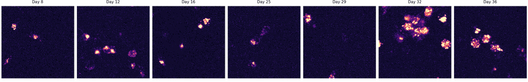

M10 / PLD3_mCherry_reporter_control
Manual identity status: uncertain_identity
Pass days: 8|12|16|25|29|32|36
Review days: 39
Excluded days: 20
Common-overlap crop: x=832:1024, y=1280:1472

| rows | 7 |
|---|---|
| mean_puncta_count | 6.429 |
| mean_punctate_mean_intensity | 303.4 |
| mean_diffuse_mean_intensity | 25.07 |
| mean_diffuse_to_punctate_ratio | 3.452 |
| mean_punctate_fraction | 0.2325 |
| mean_diffuse_fraction | 0.7675 |
| valid_rows | 7 |
| rows | 7 |
|---|---|
| mean_manders_a_in_b | 0.03859 |
| mean_manders_b_in_a | 0.05705 |
Warnings: channel_a_possible_saturation_or_clipping
Preliminary output. Requires manual ROI identity review before biological interpretation.